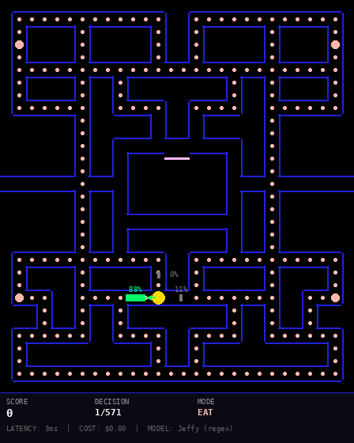
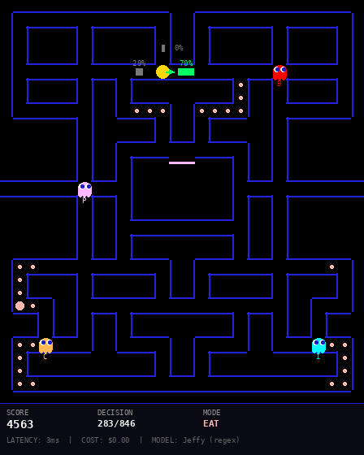
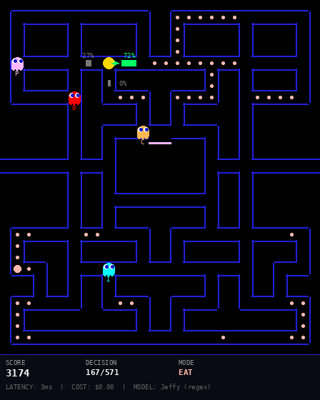

Jevman is a Pac-Man benchmark where AI agents play through structured text descriptions. At each junction, the game tells you what's in each direction (pellet distances, ghost positions, traps) and you pick which way to go.
The top entries use LLMs. I used Jeffy, an open-source text classifier that runs on CPU.
At every junction, the game sends one text description per available direction:
Go left: nearest pellet 3 steps away; 5 pellets in the next corridor;
nearest dangerous ghost 12 steps away, moving away; you reach the
next junction in 4 steps, 6 steps before any ghost
Go right: nearest pellet 1 step away; 2 pellets in the next corridor;
DANGER: Blinky in this corridor
Go up: nearest pellet 8 steps away; 0 pellets in the next corridor;
TRAP: Pinky can reach the next junction in 3 steps, you need 5There are about 37 unique patterns in these descriptions. All of them contain numbers. All of them are parseable with regex.
The game descriptions are structured text, so I parse them into numeric features with regex.
def parse_features(description):
f = {"pellet_dist": 99, "ghost_dist": 99,
"ghost_approaching": 0, "has_trap": 0,
"has_danger": 0, ...}
for part in description.split(";"):
m = re.search(r"nearest pellet (\d+) steps? away", part)
if m: f["pellet_dist"] = int(m.group(1))
m = re.search(r"nearest dangerous ghost (\d+) steps? away", part)
if m: f["ghost_dist"] = int(m.group(1))
if "TRAP:" in part: f["has_trap"] = 1
if "DANGER:" in part: f["has_danger"] = 1
return fTo train a classifier you need labeled examples. I wrote a scoring function with hand-tuned weights and played a few hundred games with it. Each junction becomes one training example: the parsed features are the input, the direction the scorer picked is the label.
def score_direction(description):
f = parse_features(description)
score = 0.0
# Survival: avoid ghosts, traps, danger corridors
if f["has_danger"]: score -= 100
if f["has_trap"]: score -= 80
if f["ghost_dist"] < 99:
threat = max(0, 20 - f["ghost_dist"]) * 3
if f["ghost_approaching"]: threat *= 2.5
score -= threat
# Pellet collection
score += max(0, 12 - f["pellet_dist"])
# Hunt frightened ghosts (200-1600 points each)
if f["has_frightened_ghost"]:
score += 40 + max(0, 15 - f["frightened_ghost_dist"]) * 3
return scoreA few hundred games produce thousands of labeled junctions, enough to train on.
Jeffy is a text classifier that runs on CPU. It supports feature-based classifiers, which is exactly what we need here: the features are already numbers, no embeddings required.
# Train a classifier on the collected game data
jeffy train --task pacman --features pellet_dist,ghost_dist,ghost_approaching,has_trap,has_danger,... \
--data training_games.jsonl
# Test accuracy on held-out games
jeffy eval --task pacman --data test_games.jsonlTraining takes under a second. The trained model is a logistic regression head over the numeric features. At game time, Jeffy's predict_features() endpoint takes the parsed feature vector and returns a direction in 3ms.


When a power pellet activates, frightened ghosts are worth 200, 400, 800, and 1600 points in sequence. The scoring function shifts from pellet-chasing to ghost-hunting: +40 base plus a distance bonus for nearby frightened ghosts. Average 9.8 ghost kills per game.
# Install Jeffy
pip install jeffy
# Start the Jeffy endpoint (serves the trained pacman classifier)
python3 jevman-endpoint.py 8787
# Clone the benchmark and run 24 games
git clone https://github.com/opper-ai/jevman-benchmark
cd jevman-benchmark && npm install
npm run submissions -- --model jeffy --endpoint http://localhost:8787Each game takes 2-5 seconds. Total run: ~90 seconds for all 24 games. The endpoint parses each junction's text into features, feeds them to the Jeffy classifier, and returns a direction.
An LLM reading "nearest dangerous ghost 5 steps away, coming toward you" does the same thing the regex does: extracts the number 5 and the flag "coming toward." It just does it with 7 billion parameters instead of one regular expression, and takes 650ms instead of 3ms.
The Jeffy classifier learns the same decision boundaries as the hand-tuned scoring function, but from examples instead of manually chosen weights. Once trained, it generalizes to junction configurations it hasn't seen before. And because it's logistic regression over a handful of numeric features, it runs on any CPU in 3ms.
This is the classifier sweet spot: when the answer is a pattern in the text, not reasoning about the text. Pac-Man with structured descriptions is a classification problem. The PR is open, the CI will verify the results.